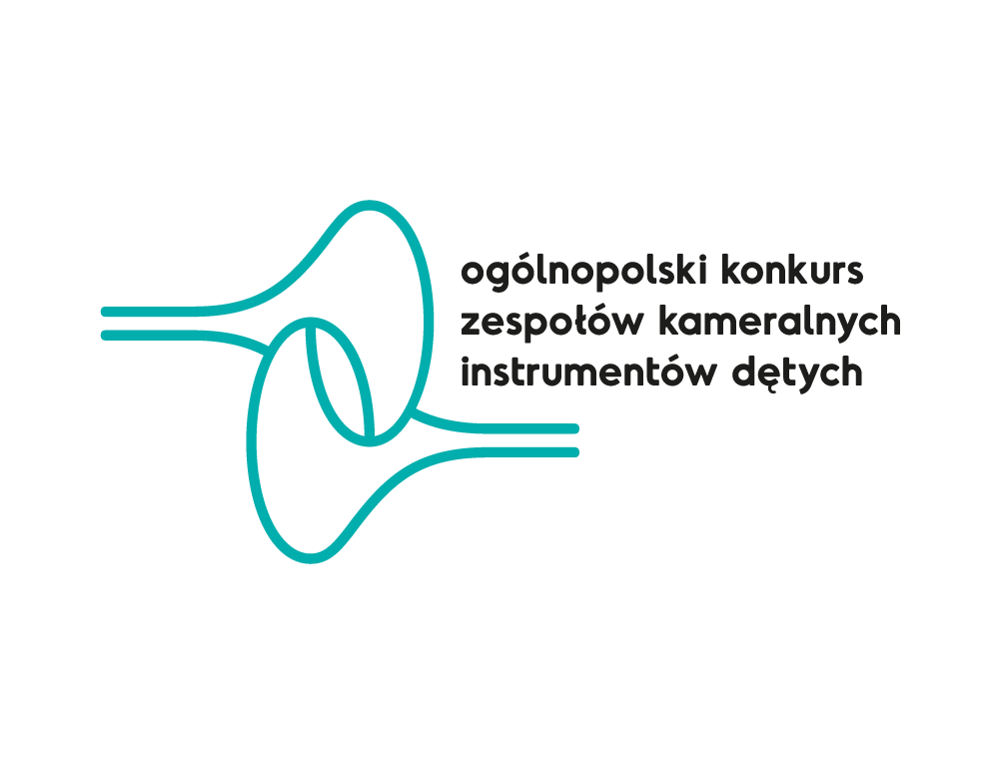
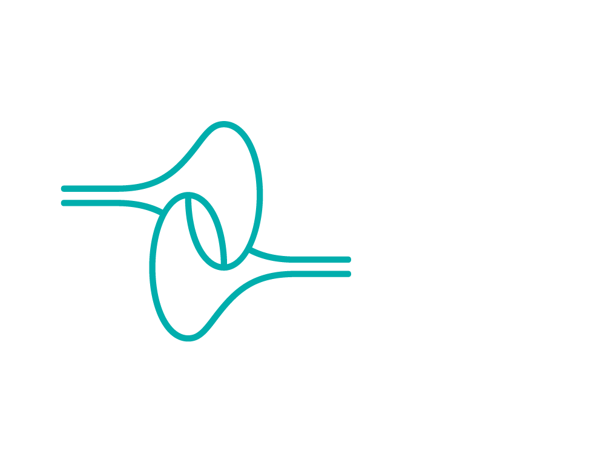
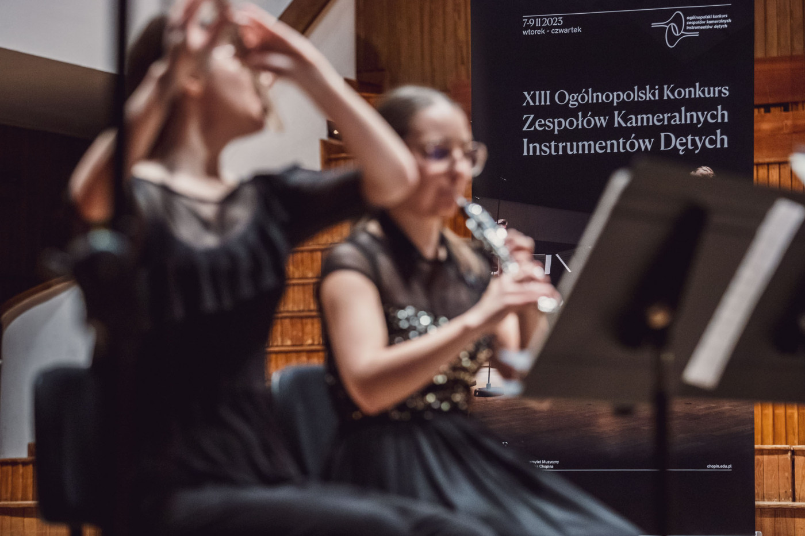
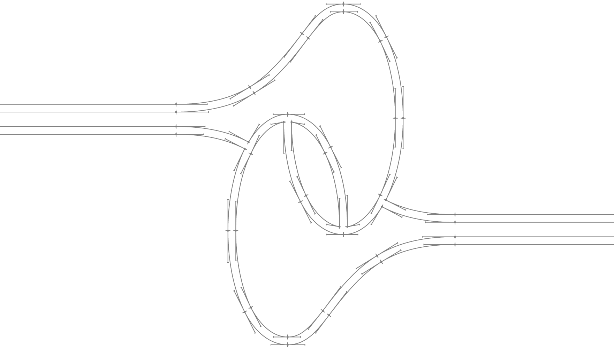

photo by Mateusz Żaboklicki
THE BRIEF I was asked to design a logo for Ogólnopolski Konkurs Zespołów Kameralnych Instrumentów Dętych [National Competition for Wind Instrument Chamber Ensembles] which has been organised by Fryderyk Chopin University of Music in Warsaw since 1997. My drawing features two opposing trumpet bells intertwined symmetrically. The name of the competition sits nicely despite being very long as it comes out of one of the instruments.
© 2016 Mikołaj Grabowski
